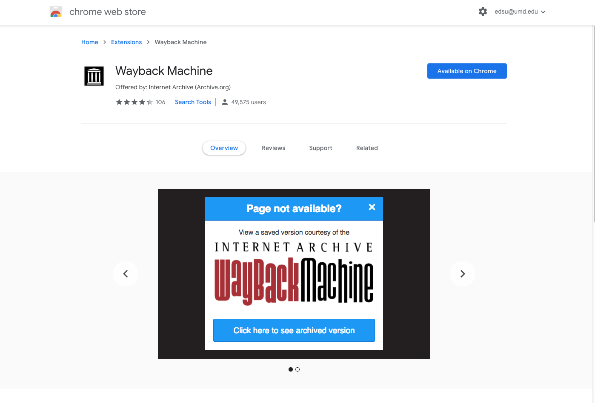
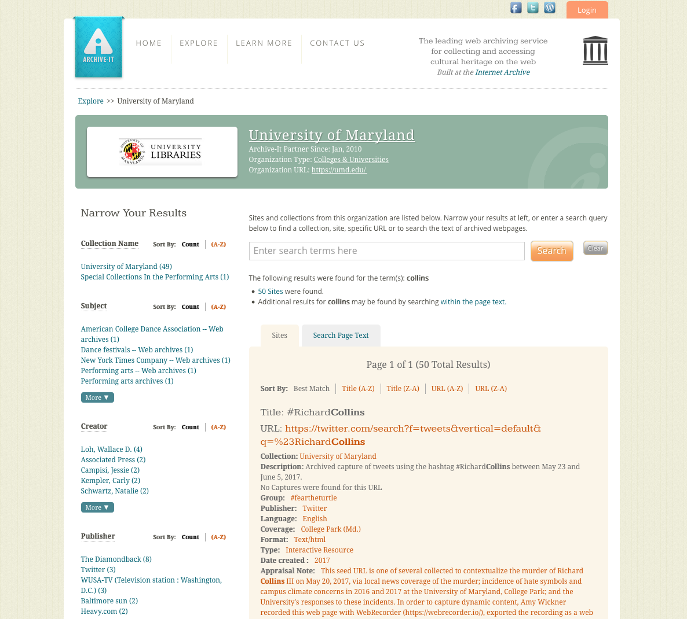

# Wayback Exercise
---
1. Install the web extension ([Chrome](https://chrome.google.com/webstore/detail/wayback-machine/fpnmgdkabkmnadcjpehmlllkndpkmiak)/[Firefox](https://addons.mozilla.org/en-US/firefox/addon/wayback-machine_new/))
2. Browse the web!

Back of the envelope as a transition to Webrecorder.